Algeria
2024-11-18
Algeria is a North African country of 46.3 million people with a coastline along the Mediterranean sea. A former French colony, the modern country of Algeria gained it’s independence after a long and costly war in 1962. It’s navy dates back from its independence and the country stayed non-aligned throughout the cold war, allowing it to source material from a variety of countries. Its major surface fleet units today include an Italian built amphibious transport dock, 2 British built landing ships, and 9 frigates or large corvettes (2 German, 4 Chinese, and 3 Soviet built).
Algeria is a relatively new entry in the world of submarines. All acquisitions in this domain have come from Soviet and Russian sources. A total of 8 submarines have operated in the Algerian navy. The two initial second-hand Romeo class (Project 633), served briefly before being replaced by 2 newly built Kilo class (Project 877) in the late 1980s. These have since been complemented by 4 improved Kilo class (Project 636) in the 21st century. All 6 Kilo class submarines are still active today.
Submarines operated by Algeria
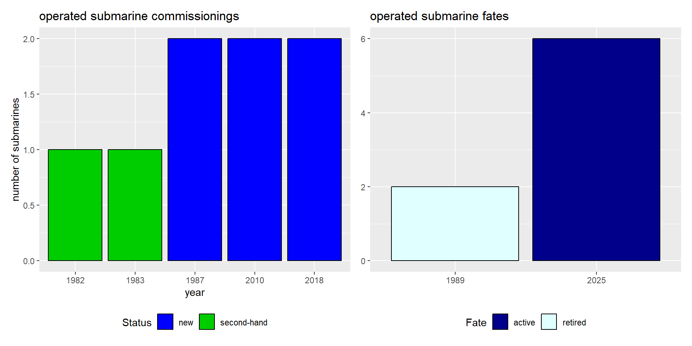
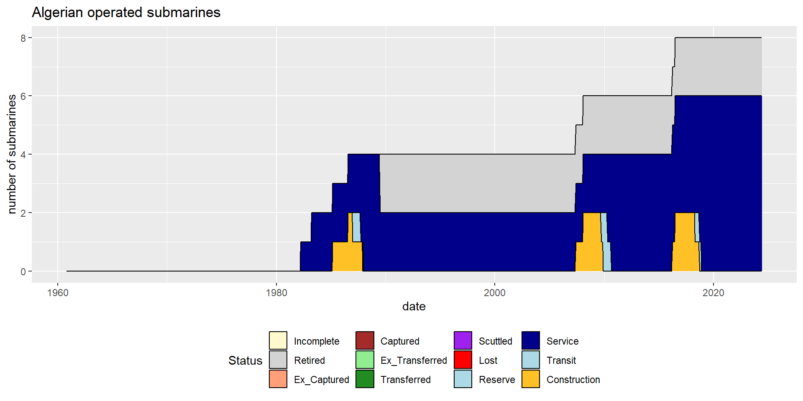
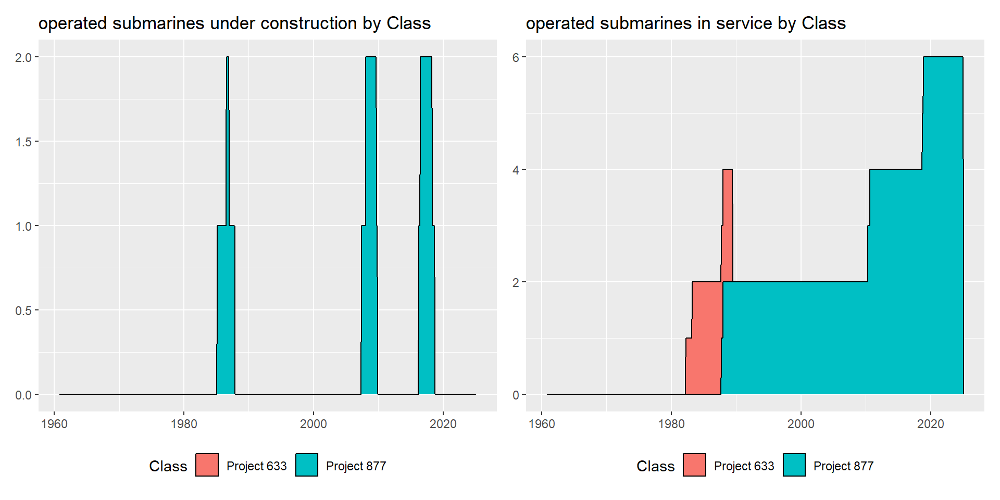
Individual submarines by class
Specification summaries
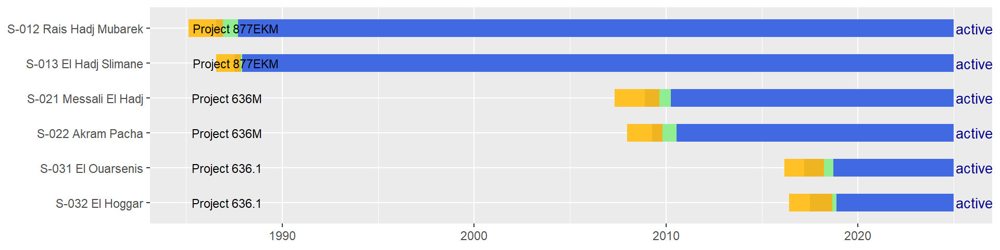
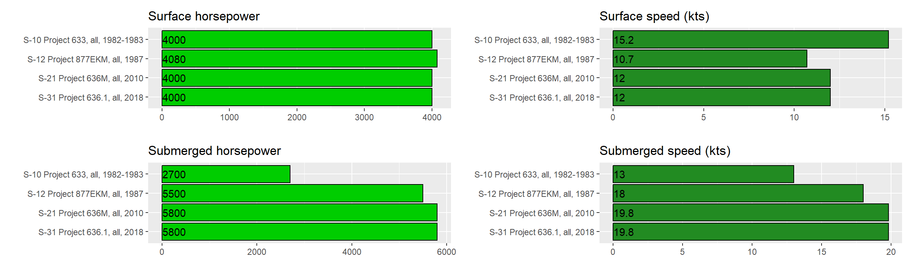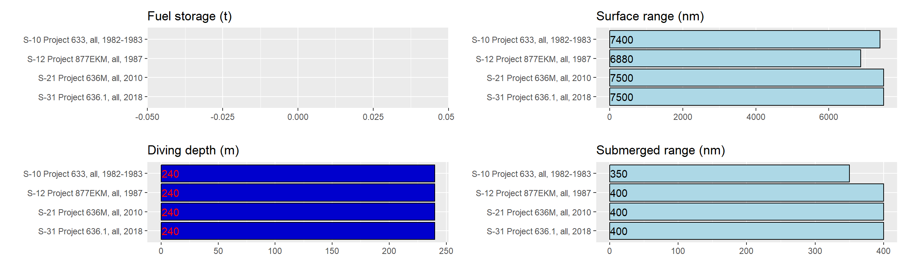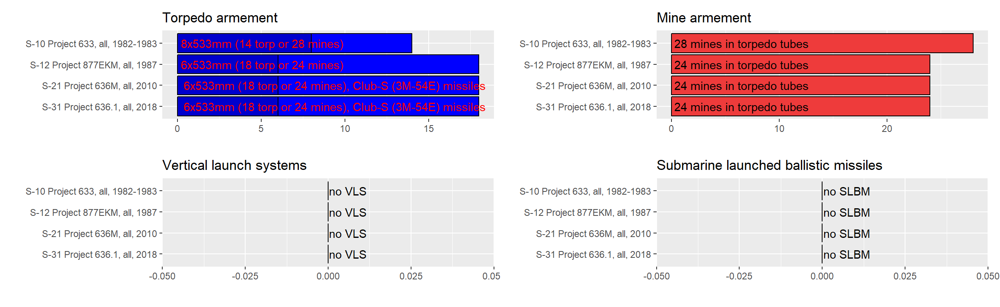
Romeo class (Project 633)
The first Algerian submarines were second-hand Soviet Romeo class which had a short career. They were more training boats then anything else until the arrival of the new Kilo boats.
| Version | Boats | Number | Displacement_t | Propulsion | Power_HP | Fuel_t | Speed_kts | Range_nm | Depth_m | |
|---|---|---|---|---|---|---|---|---|---|---|
| 2 | Project 633 | all | 2 | 1330/1729 | diesel-electric | 4000/2700 | NA | 15.2/13 | 7400/350 | 240 |
| Version | Boats | Year | Torpedo_text | |
|---|---|---|---|---|
| 2 | Project 633 | all | 1982-1983 | 8x533mm (14 torp or 28 mines) |
/none/9235_010_20230511193114.png)
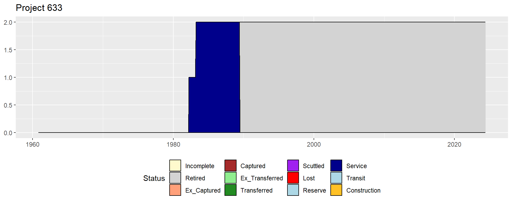
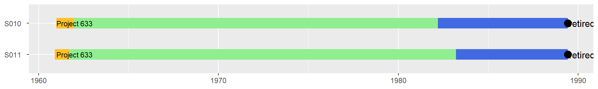
Kilo class (Projects 877 and 636)
Algeria’s current submarine force consists of 3 pairs of Kilo class submarines acquired new from the Soviet Union, and then Russia over several decades.
| Version | Boats | Number | Displacement_t | Propulsion | Power_HP | Fuel_t | Speed_kts | Range_nm | Depth_m | |
|---|---|---|---|---|---|---|---|---|---|---|
| 3 | Project 877EKM | all | 2 | 2325/3075 | diesel-electric | 4080/5500 | NA | 10.7/18 | 6880/400 | 240 |
| 4 | Project 636M | all | 2 | 2350/3100 | diesel-electric | 4000/5800 | NA | 12/19.8 | 7500/400 | 240 |
| 5 | Project 636.1 | all | 2 | 2350/3100 | diesel-electric | 4000/5800 | NA | 12/19.8 | 7500/400 | 240 |
| Version | Boats | Year | Torpedo_text | Missile_text | Light_SAM | |
|---|---|---|---|---|---|---|
| 3 | Project 877EKM | all | 1987 | 6x533mm (18 torp or 24 mines) | - | 8xIgla-1 (9M313) |
| 4 | Project 636M | all | 2010 | 6x533mm (18 torp or 24 mines) | Club-S (3M-54E) | 8xIgla-1 (9M313) |
| 5 | Project 636.1 | all | 2018 | 6x533mm (18 torp or 24 mines) | Club-S (3M-54E) | 8xIgla-1 (9M313) |
/none/9077_021MessalielHadj_20230511193118.png)
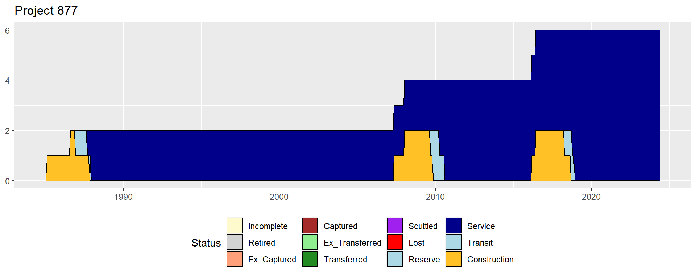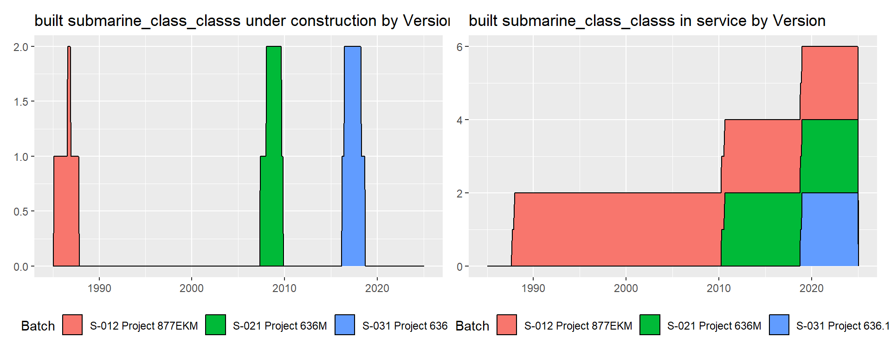
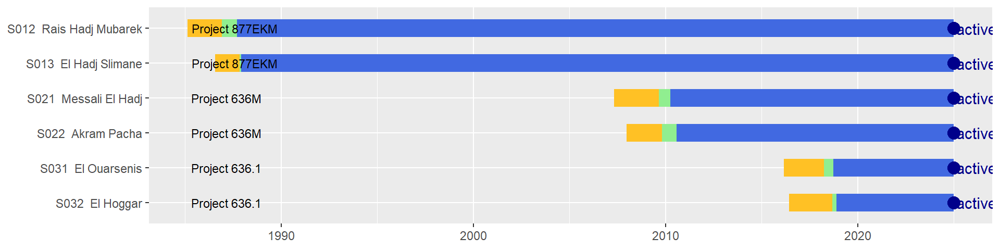
Full summary
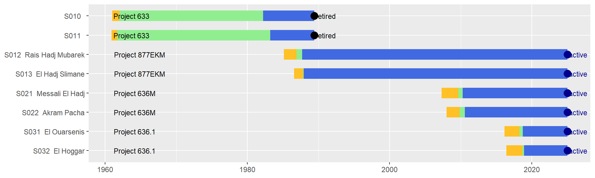